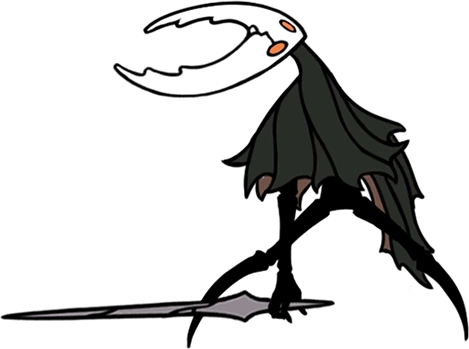
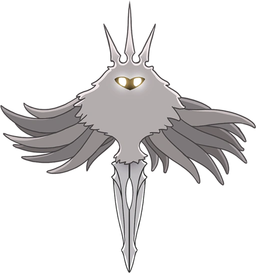
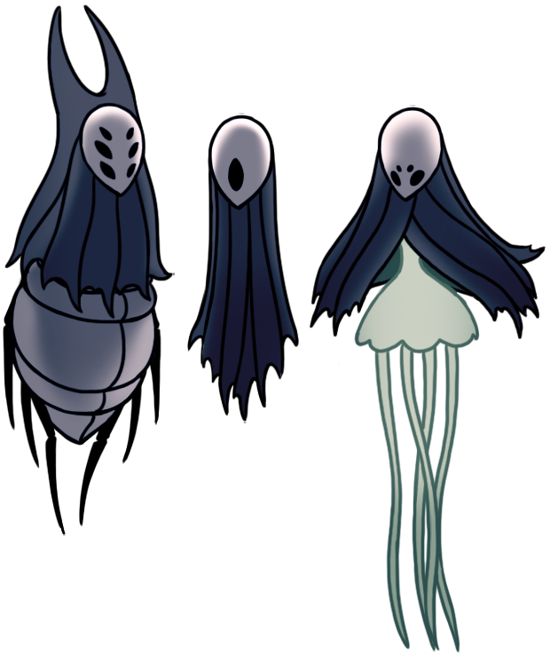

Site made by: Davi
Feat: Daniel

Game made by: Team Cherry
Summary
Feat: Daniel
Game made by: Team Cherry
Summary
Hollow Knight is an action-adventure video game released in 2017, developed and published by Team Cherry. It takes place in an underground world called "Hallownest," where the player controls a character known as the "Hollow Knight" on their journey to explore the kingdom, defeat enemies, and uncover hidden secrets. The game features elements of platforming, combat, exploration, and non-linear progression, along with a rich and complex narrative that is told through mysterious characters and a dark and melancholic atmosphere.
Lore
The story of Hollow Knight is told in a fragmented manner, and it is up to the player to discover and interpret the details. In summary, the game takes place in the underground kingdom of Hallownest, which was once a prosperous and vibrant place but is now in ruins and filled with hostile creatures. The Hollow Knight is one of the characters who inhabit this world and embarks on a journey to uncover what happened to the kingdom and attempt to restore it. Throughout the game, the player encounters various characters who help to tell the story of Hallownest. It is revealed that the kingdom was dominated by a being called "The Radiance," who sought to control a material known as the "Scarab Beetle," which had powerful magical properties. However, this power ended up corrupting The Radiance and causing a series of catastrophic events that led to the downfall of Hallownest. The player must explore different areas of the kingdom, facing challenging enemies and bosses to collect powers and abilities that allow them to progress in previously inaccessible areas. In the end, the Hollow Knight confronts The Radiance in an epic battle to determine the fate of Hallownest. The story has several twists and turns and an exciting ending that depends on the player's choices.
Main Characters:

Hornet is an important and recurring character in the game Hollow Knight. She is a mysterious and powerful insectoid with a appearance resembling that of a wasp. Hornet plays various roles throughout the story, but her central role is that of a challenger and guide to the protagonist, the Hollow Knight.

The main character of Hollow Knight, known as the Hollow Knight, is a silent and mysterious protagonist. He is a small, hooded creature with a body resembling that of an insect.

"The Hollow Knight" is chosen as the vessel to imprison The Radiance due to its empty nature, which makes it resistant to malignant influence. It undergoes a binding ritual to become a living prison, sealing The Radiance within itself.

The Radiance is one of the main antagonists in the game Hollow Knight. She is a powerful entity and the source of the infection that plagues the kingdom of Hallownest. The Radiance is depicted as a radiant and shining figure, with flaming wings and an imposing appearance.
The Dreamers are powerful beings who are asleep and imprisoned in deep dreams. They were trapped by a mysterious event called the "Dream Nail Ceremony," which took place long before the events of the game. This ceremony was performed to seal The Radiance.
Hollow Knight features a variety of secondary characters, each with their own story, personality, and role in the game world. These characters serve different functions, such as providing information, offering services, selling items, or even giving quests to the player. Some are friendly and assist the protagonist, while others can be hostile or indifferent.
Game-Review
I, as a writer and creator of this site, have completed Hollow Knight multiple times, achieving all the game's endings (including the Godmaster DLC), and I can confidently say that Hollow Knight does its job very well and is one of the best Metroidvania-style games I have ever played, or perhaps even the best game I have ever played. Nonetheless, there are still positive and negative points that I would like to mention here.
Positive Points:
- - It is highly replayable due to the different alternate endings, secrets, and various game modes.
- - It features a fragmented and rich story that is enjoyable to uncover.
- - The gameplay is smooth and the graphics are pleasing.
- - The game has characters with intriguing backstories and depth.
- - The controls and gameplay are easy to pick up.
- - The soundtrack is also noteworthy.
Negative Points:
- - With its vast map, the game's traversal can sometimes become repetitive and tedious.
- - It's not uncommon to feel lost in the midst of the game.
- - The initial playthrough can be confusing.
- - Additionally, some of the in-game noises and sounds may be discomforting.
-
Gameplay:

Grafics:
Controls:
Soundtrack:
Grade:
 4.5
4.5
Hollow Knight on Steam